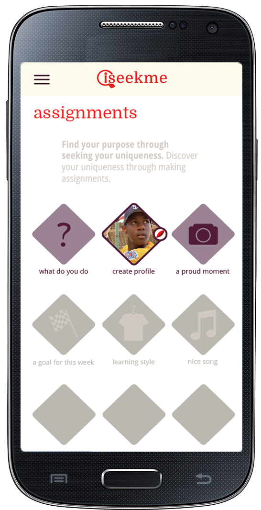

Continual personal development is imperative for a happy, successful life, experts agree. It's hard enough to plug out of everyday turmoil! And how do you make a habit of the new stuff you’ve learned? iSeekme gathers everything needed to make that personal development journey happen, and brings it to your mobile phone, whenever, wherever you want within your reach
|  |